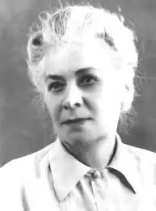

Олександра Миколаївна Радченко (нар. 1896, Охтирка, Сумська область — пом. 1965, Вовчанськ, Харківська область) — українська вчителька, політв'язень радянського режиму. З 1926 по 1945 роки вела щоденник, у якому описувала події Голодомору.
У 1930-ті роки працювала учителькою на Харківщині. За службовим становищем мала харчовий пайок, що дало змогу їй і її дітям врятуватися від голоду. В цей час веде в щоденнику записи, що стосуються Голодомору 1932–1933 років.
З 1926 року по 1936 працювала учителькою. З 1937 по 1939 рік працювала на метеорологічній станції. У 1940 році переїхала з родиною до Буковини. У 1941 році Буковину окупували румунські війська, які у той момент були союзникам німецьких військ. Олександру разом з її чоловіком Василем арештували і відправили до табору. Там вони перебували кілька місяців, аж поки колеги Василя не допомогли їх звільнити. Після звільнення чоловік продовжив і далі працювати лісником. Спочатку сподівалася, що нова влада "звільнить від комуністів", тому зв'язалася із німецьким журналістом. Він обіцяв видати щоденники про Голодомор. Проте щоденники так і не видали, а Олександра Миколаївна з часом зрозуміла, що нова влада не ліпша за радянську. У 1941–1942 роки веде щоденник вже про злочини іншої, німецької, злочинної влади. У 1943 році її 17-річну дочку Еліду забрали на примусові роботи до Німеччини. А в 1944 році чоловіка як "пособника фашистів" забрали у радянський штраф-бат. У 1945 році дочка і чоловік повернулися додому. Але Олександру Миколаївну заарештували за щоденники, виявлені під час обшуку. Було вилучено 7 зошитів-щоденників. Потім три з них було знищено КДБ. Слідство велося протягом півроку. Олександра відразу призналася, що щоденники вела саме вона. Але слідчий примушував її визнати, що вона вела їх з метою дискредитації Радянського Союзу. Слідство тривало пів року, і 14 грудня 1945 року в місті Проскурів (нинішній Хмельницький) її звинуватили в "контрреволюційній діяльності" та за "контрреволюційні щоденники" їй було винесено вирок— 10 років Гулагу. Під час перебування в ув'язненні боролася за своє звільнення і писала протести, але безрезультатно. Ув'язнення відбувала в таборі в Норильську, і була звільнена 30 липня 1955 року. Вона повернулася додому у Вовчанський район Харківської області у серпні 1955 року із підірваним таборами здоров'ям. Олександра Радченко прожила ще 10 років і померла у 1965 році. Похована у м.Вовчанськ.